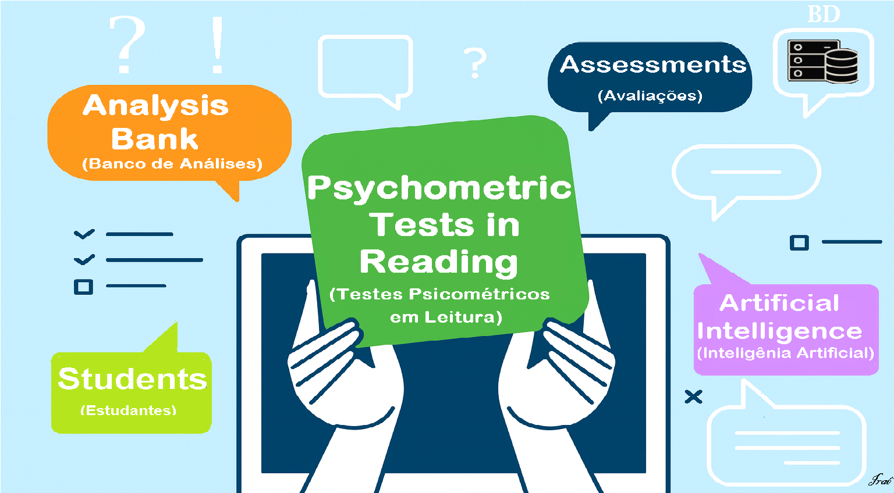

FERRAMENTA DE BANCO DE ITENS, APLICAÇÃO E ANÁLISE (simples)
Autor: Iraê César Brandão -
Criado em 16/11/2025 - Atualizado em: 19/11/2025
Criar / Gerar Itens
Preencha um enunciado (trecho) e a pergunta. Ajuste dificuldade (1-fácil a 5-muito difícil). Você pode usar o botão "Gerar Automático" para criar um item simulado.
Nível: 3
Banco de Itens
#
Passagem (resumida)
Pergunta
Dif
Correta
Aplicar Teste e Coletar Respostas
Insira um identificador (anônimo) para o participante e aplique o teste.
Estatísticas básicas calculadas a partir das respostas coletadas:
"FERRAMENTA AIG TESTE LEITURA"

Justificativa deste Projeto:
A elaboração deste teste tem como finalidade oferecer um meio sistemático, ético e empiricamente fundamentado para avaliar a proficiência leitora em diferentes níveis de dificuldade, permitindo tanto o diagnóstico individual quanto a análise pedagógica e científica dos resultados. Em contextos educacionais tradicionais, os instrumentos de avaliação costumam apresentar limitações importantes: ausência de calibragem entre itens, falta de controle sobre o nível de dificuldade, subjetividade na elaboração de questões e pouca comparabilidade entre turmas e aplicações. Ao desenvolver um teste baseado em geração automatizada e parametrizada de itens, busca-se reduzir essas limitações ao possibilitar maior padronização, reprodutibilidade e sensibilidade à evolução do desempenho dos participantes.
Além disso, o uso de medição computacional permite coletar dados em larga escala, registrar tempo de resposta, calcular métricas psicométricas (como dificuldade, discriminação e confiabilidade), criar diferentes versões equivalentes do teste e exportar resultados para análises estatísticas mais robustas, como TRI/IRT (Teoria da Resposta ao Item) ou modelos de Rasch. Esse processo contribui para a construção de instrumentos mais justos, transparentes e baseados em evidências, alinhados às diretrizes contemporâneas de avaliação educacional.
O desenvolvimento desse teste atende a duas finalidades complementares:
(1) pedagógica: oferecer a educadores uma ferramenta que apoie decisões de ensino e intervenções personalizadas, e
(2) científica: permitir estudos que investiguem como diferentes características dos textos e das questões impactam a compreensão leitora, especialmente quando comparados testes com e sem controle de dificuldade.
Assim, o instrumento atua tanto como diagnóstico quanto como objeto de pesquisa, contribuindo para a melhoria contínua da prática avaliativa e para o avanço do conhecimento na área de alfabetização e psicometria educacional [1].
____________________ [1] Psicometria educacional: é o ramo da psicologia e da educação que utiliza a teoria e a técnica para medir construtos psicológicos e de aprendizagem por meio de instrumentos como testes e avaliações.
Orientações de Uso
Interface para criar itens manualmente ou gerar itens automáticos simples (simulação) com controle de dificuldade (1–5);
Área para aplicar o teste a participantes (ID anônimo), registrar respostas em memória e calcular estatísticas básicas: p-value (proporção correta por item), discriminação aproximada (correlação item-total) e alfa de Cronbach [2];
Botões para exportar o banco de itens e as respostas em CSV (para análise posterior em R/SPSS/Python) e para importar CSV de volta.
_____________________________ [2] Alfa de cronbach (α): é uma medida estatística de consistência interna, usada para avaliar a confiabilidade de um questionário
ou teste com múltiplos itens. Ele mede o quão intimamente um grupo de itens está relacionado, indicando se todos os itens de
uma escala medem o mesmo conceito subjacente de forma consistente. Valores mais altos de α (alpha) geralmente indicam maior
confiabilidade e consistência interna entre os itens da escala.
Sugestões práticas para aferição empírica e ética (passos e recomendações resumidos)
Planejamento experimental: monte um desenho comparativo para avaliar diferença entre testes com e sem controle de dificuldade:
por exemplo, grupo aleatório
A (teste gerado sem controle) vs B (teste gerado com controle) ou desenho cruzado (cada participante responde ambos, com ordem contra-balanceada). Faça um piloto para checar itens (n pequeno, p.ex. 20–30) antes do estudo principal. Use métricas: p-value, discriminação, confiabilidade (α), curva ICC se calibrar por IRT. Para IRT você precisará de ferramentas estatísticas externas (R: packages mirt, ltm; Python: pyirt/pycirt), já que a ferramenta web faz apenas análises básicas.
Amostragem / Tamanho de efeito: calcule tamanho de amostra baseado na diferença mínima detectável desejada (p.ex. diferença de 0.25 no efeito de grupo em média de acertos) e no nível de confiança/poder (p.ex. 80%). Se não tiver cálculo formal, um ponto de partida prático para estudos de validação instrumentais costuma ser 100–200 participantes para análise de itens; estudos piloto menores (30–60) para depuração.
Ética e consentimento: aplique termo de consentimento informado claro (objetivo do estudo, anonimização, voluntariedade, direito de sair sem prejuízo). Se for pesquisa institucional, submeta ao comitê de ética (CEP/IRB) conforme regras locais. Armazene apenas identificadores anônimos; não colete dados sensíveis sem justificativa e aprovação.
Triangulação qualitativa: complemente com entrevistas semiestruturadas ou think-aloud com 10–20 participantes para entender como os sujeitos interpretam itens (isso revela se diferença de acerto é por dificuldade real ou ambiguidade do item). Registre (com permissão) e transcreva trechos relevantes. Use perguntas como: “o que o enunciado pede?”; “por que escolheu essa alternativa?”; “houve palavra difícil/ambígua?”.
Validação e análise: após coleta, faça:
(a) análise descritiva das taxas de acerto por item;
(b) análise de discriminação (itens fracos: discrim < 0.2 devem ser revisados);
(c) confiabilidade (cronbach α);
(d) se possível, calibragem por Teoria da Resposta ao Item (IRT) para estimar parâmetros de dificuldade e discriminação mais robustos;
(e) análise de diferenças entre grupos (t-test / modelos mistos) para comparar médias e desvios. Reporte intervalos de confiança.
Transparência e reprodutibilidade: publique (ou armazene) o banco de itens final e os scripts de análise (R/Python) e documentação sobre como os itens foram gerados (algoritmos, heurísticas, revisão humana). Isso melhora validade face e científica.
Iraê César Brandão
CEO- Founder LUCK WAY® | MBA Executive Cyber Security | IT Manager | Senior Developer | Accountant | Prof. Technician-Multidisciplinary Workshop | MBA Exec. in Strategic Marketing Manag. Planning and Comp. Intelligence